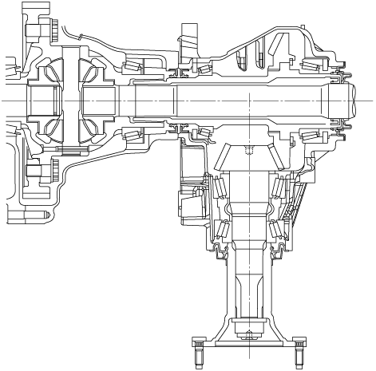

เกียร์ทรานเฟอร์
id031600140100
จุดประสงค์/การทำงาน
• โครงสร้างทรานเฟอร์แกนเพลาเดียวที่ไม่ซับซ้อนได้ถูกนำมาใช้เพื่อลดขนาดและน้ำหนักลง
• เสื้อเกียร์ทรานเฟอร์แบบบางลงได้ถูกนำมาใช้เพื่อลดน้ำหนัก
ภาพตัด

ac5uun00000317